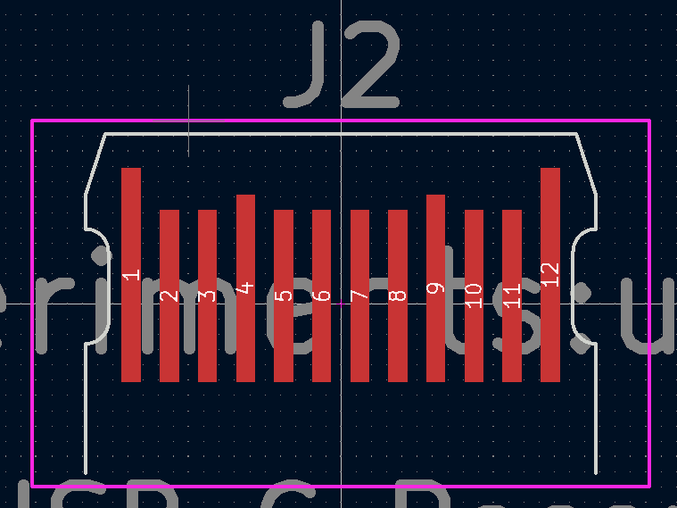
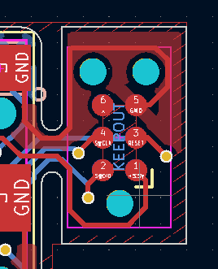
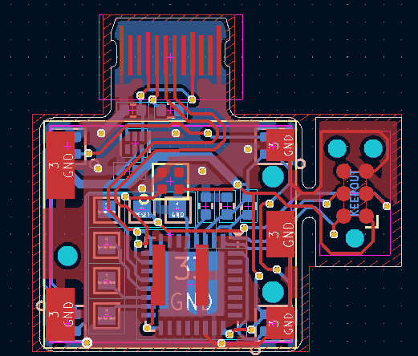
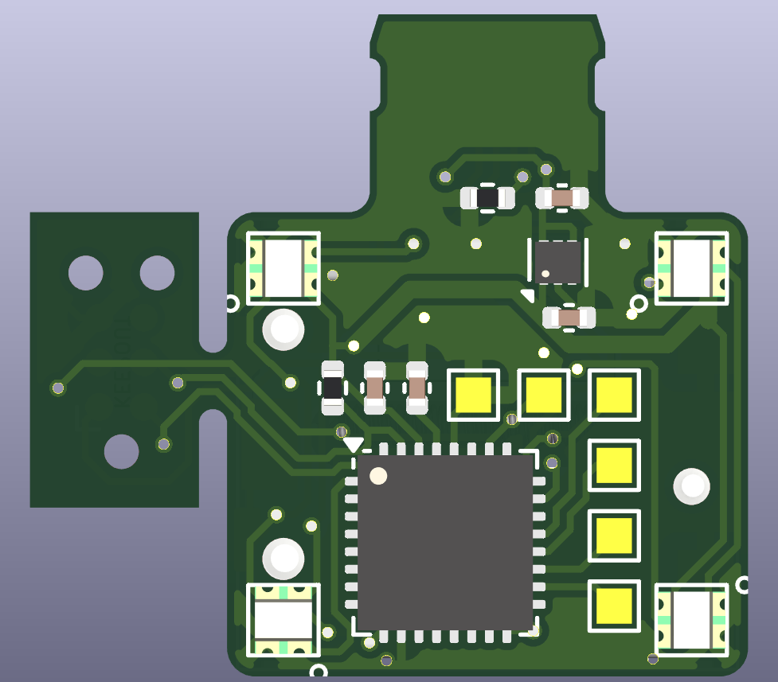
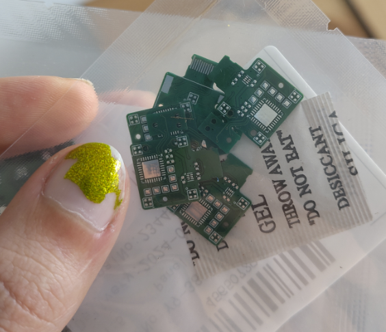
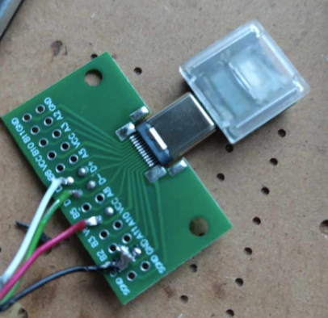
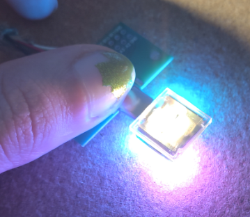

30th December 2024
As a co-founder of Polarity Works, I've had the privilidge of participating in the creation of a whole bunch of very cool projects, but I've also designed a whole bunch of silly personal projects that never have any commercial prospects but were fun to experiment and learn with. Most of my personal projects that I'm not too ashamed to share are open source on my GitHub, including this one, which I call it the Smolpad, because it's so smol!
Shortly after they were released, we got our hands on a few sample Cherry MX ULP switches with their demo clear keycaps. Without much of a use, they sat in a box for a few years until I had an idea: make the smallest one-key macropad I could with this switch.
The Type C connector is usually the tallest component on a board, 3-4mm for a standard top mount one. There are mid-mount ones and other weird footprints, but since only one or two of these are going to be made, taking inspiration from projects I'd seen like the CRAPi2040, I thought I'd try and use a substrate PCB connector.
Whilst wireless keyboards with the nRF52840 are my bread and butter, I'm always interested in trying new things, and given the space limitations under the board, I went for an Atmel SAMD21E17A. It's a QFN chip with a built-in oscillator, so you only need a 3.3V regulator and 4 external passives to run the show. Unlike the RP2040, you can use USB with the internal oscillator, so you have a very small overall footprint. Annoyingly, SAMD21s are kinda expensive, which definitely tips the scales in favor of the RP2040 for most projects. It's so much more capable for a lot less money.
Like most of my designs, this one was created in KiCad (I've long since moved away from EAGLE after being taught it during my degree). I've been using a KiBot script lately for automated manufacturing file export, that generates a whole load of useful files for both hand assembly for prototypes and personal products, and factory files for mass production for customer projects. It picks up project names and part numbers from a metadata file as well as Git versioning information and populates silk on the PCB with it seamlessly which is very useful when handling multiple board revisions.
The PCB Type C connector was created by settinger in this library. It needed some tweaks to work in the application, so I could join it onto the rest of the PCB, the way this was done was probably very sketchy but the outline filled out properly and KiCad didn't throw any errors so I sent it.

For SWD/debugging connectors previously I'd used a 1.27mm pitch pin header with some little alligator clips, but that grew old really quickly getting the pinout right and holding the thing in place and not having it pop off halfway through programming so recently I've been using the Tag Connect connector more, it's much smaller, the pinout is standardised and with the little clips you can use to hold the 2030-NL variant in place you can do long debugging sessions without a concern. The main downside of it is it requires through holes on the board for the locating pins, in this appication the top side is completely covered by the switch so the solution was a little snap off "wing" the connector can be placed on for flashing the bootloader.

The PCB would be a little boring if it was just a switch. The SK6805-EC15 RGB LEDs are so tiny I had to fit a few on the board, one in each corner and one under the switch for good measure. I made a little bit of a mistake here and ran them off 3.3V, which is a little out of spec, not sure what I was thinking as I never usually do that.
Given a theme of this board is miniaturisation a SOT23 voltage regulator would be by far the tallest component on the board. A properly minute LDK130PU33R was chosen instead, there werent really any strong criteria, just small and powerful enough. I also eschewed a physical reset button in favour of some solder pads, and added some extra solder pads connecting to random I/O because they could be handy.


The PCBs were ordered in 0.6 and 0.8mm, with a little frameless stencil because some of the components absolutely needed reflow assembly. Once they arrived I tried both PCBs on a USB cable and the 0.6 ones were quite loose and the 0.8 ones were a bit on the tight side but they were better, so I assembled the 0.8mm ones.
Because this pcb has components on both sides I had to really think about the assembly sequence, the LED that lives under the switch makes it even trickier because you can't see if it's been reflowed right, and you can't really do the switch after then because it won't sit flat. I elected to reflow the back side on a hotplate, then hold it in a PCB holder and reflow the switch and top side LED with a hot air gun.
I accidentally melted one of the keycaps I had with the hot air, not the best decision to try reflowing the switch with the keycap on.

Like all my projects this runs ZMK, I know the codebase and the board definition mechanics and it's really easy to get up and running with a new board without forking the whole repository. I gave this board the latest and greatest at time of assembly and gave it a ZMK Studio (Runtime keymap editing) enabled firmware. The board definition can be found here. I forked a known working SAMD21 board definition to get going.
The board didn't work with regular USB cables, it would short the contacts on any power supply I tried, I suspect this is because I left the copper on the back side of the "connector" and the contacts were scratching through the soldermask and shorting. I solved this by making a custom cable without the back side contacts, not the most professional solution but works well enough for this little fun project. If I ever do this again I'll make sure to add a restriction so the area wont be filled, as a bonus it'll make the pcb a hair thinner which should make the fitment a bit better.

It was at this point I'd discovered my mistake with the LEDs, the first LED in the chain wasn't quite right, usually it was completely dead but sometimes it would freak out a bit, I'm not sure if this was a SAMD21 specific thing or because I was running the LEDs off 3.3v. I've never had any issues with these LEDs with 3.3v SPI signals before on nRF52 and RP2040 even though it's not really allowed but either way I wasn't going to build another one of these so I just left it. If you hold down the switch sometimes the first LED goes to full brightness white so it's not just off. It seems to act as a level shifter for the LEDs after it either way so the other four LEDs worked fine.

The lighting and everything worked very well, the board was really not very troublesome at all compared to some other projects. It's definitely fairly useless but fairly useless things can be cool, good fun to just press "a" with. If you want to make your own the design files can be found here. Note it really wants tweaking, changing the type c connector to have no copper on the back and a level shifter for the LEDs.